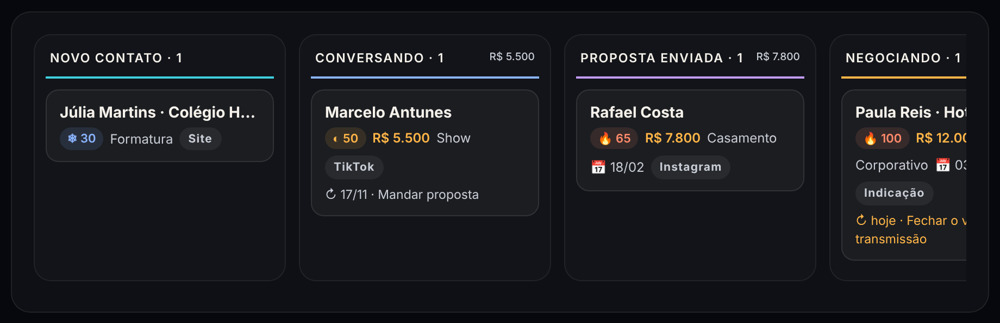
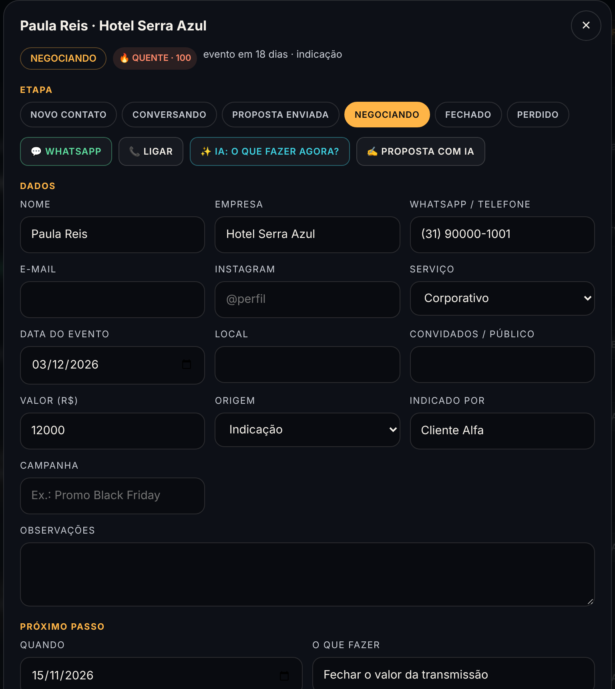

09 · Marketing — CRM
Funil e ficha do contato
Cada contato é um cartão que anda pelas colunas: Novo contato → Conversando → Proposta enviada → Negociando → Fechado (ou Perdido).

No computador, arraste o cartão de uma coluna para outra. No celular, troque a etapa na ficha.

Ficha: etapa, canais, dados e próximo passo.
Na ficha
- 1🔥 Temperatura (0 a 100): sobe com data próxima, indicação e conversa recente; cai quando o contato fica dias sem conversa.
- 2WHATSAPP abre a lista de mensagens prontas e registra no histórico. ✨ IA: O QUE FAZER AGORA? sugere o próximo passo e escreve a mensagem.
- 3✓ FECHAR NEGÓCIO cria o evento (status Confirmado) e o cliente. MARCAR PERDIDO pede o motivo — ele aparece nos indicadores.
Colar a mensagem do cliente
Em ✨ COLAR MENSAGEM DO CLIENTE, cole a conversa do WhatsApp, a DM ou o e-mail. A IA separa nome, telefone, data, serviço e local; você confere e cadastra. Se o telefone ou e-mail já existir, a ficha avisa para não duplicar.
Mensagens prontas e ajustes
No fim da página do funil: edite as mensagens (use {nome}, {servico}, {data}, {valor}, {assinatura}), escolha a assinatura e liste os serviços que você vende e a meta de fechamentos por mês.